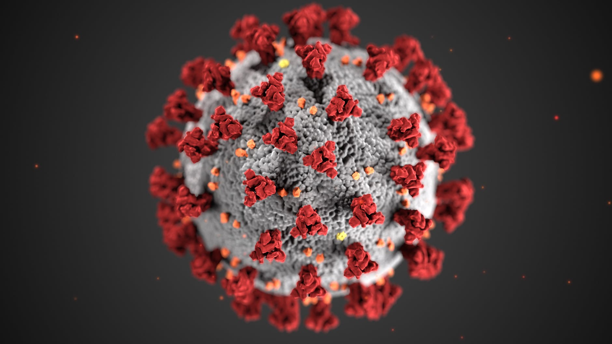

Online Care done right.
CinnMD is the premiere all online medical telecommunications company in Cinnaminson!
Some of our services include:
- Real-Time Interactive Services
- Virtual Meetings
- Remote Monitoring of Health
- On-the-Spot Online Answers to Medical Questions
- And more!
All online, no need to come in!

To accomodate for the pandemic, CinnMD's services are all fully online. This eliminates the spread of Covid-19 and transmission of other illnesses, and allows our workers to focus fully on helping you!
Can't find the treatment you are looking for?
No problem! We'll direct you towards a local medical professional to assist in you getting help for free. If they ask who sent you, just tell them CinnMD! Stay safe in this tough time, and utilize telemedicine if feeling sick or in need of medical attention unless urgent.
Need a prescription?
We'll send it to your nearest pharmacy to get filled! With insurance, it will cost you little to nothing out of pocket, and can get your needed medication.
Why CinnMD?
While new, CinnMD is dedicated to your health and well-being. In order to provide you with the best experience possible, CinnMD is hard at work everyday to get you the best virtual care possible. Whether it's a question, concern, or just general check-in, CinnMD will do its best to make things work out for you. CinnMD will work with insurance and other services if need be to maximize your experience. Customer satisfaction drives us everyday to become the best we can, so send us an email or a message to reach out!
First Time With Us?
Get Started Now!